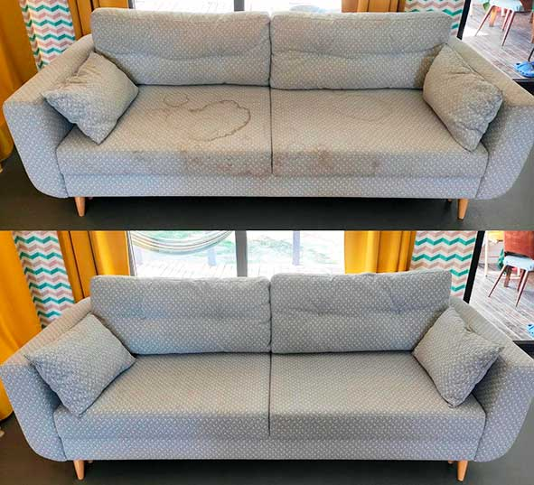

Clean and well-maintained furniture is one of the main adornments of every home.
However, initial
cleanliness cannot be maintained indefinitely.
If upholstered furniture is not taken care of, it quickly becomes soiled and eventually deteriorates over
time.
Regular vacuuming cannot eliminate the large amount of dust that accumulates deep within upholstered
furniture, as well as saprophytic mites and microorganisms.
Furthermore, furniture dry cleaning will rid you of stains that have accidentally found their way onto the
surface.
Upholstery dry cleaning is performed by experienced specialists and involves a set of procedures that allow
for achieving perfectly clean upholstered furniture as the end result.
Our company utilizes the most modern equipment and water-based chemical substances that are completely harmless
to the human body.
